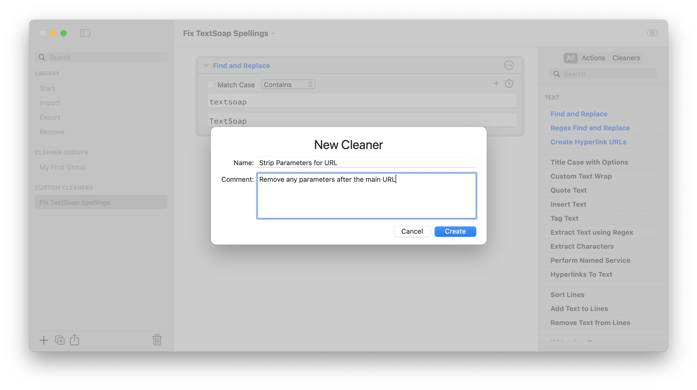
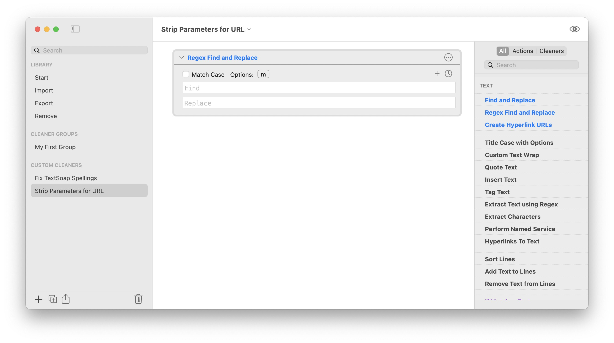
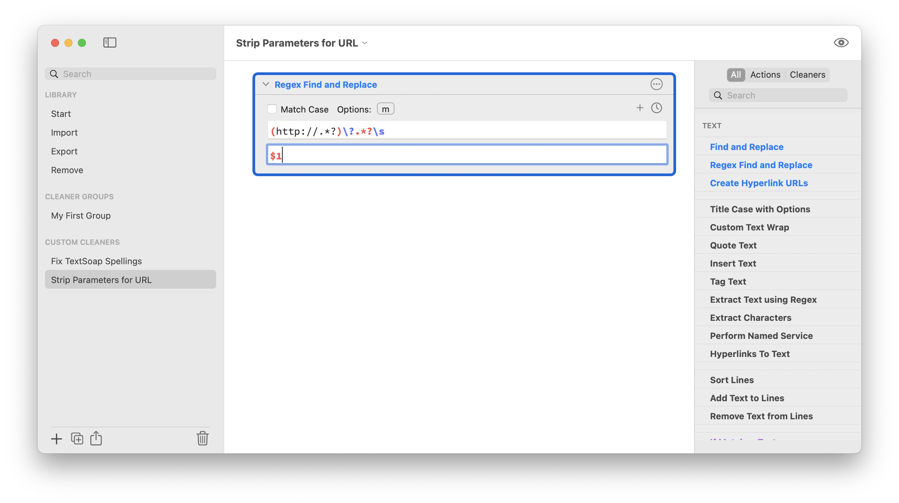
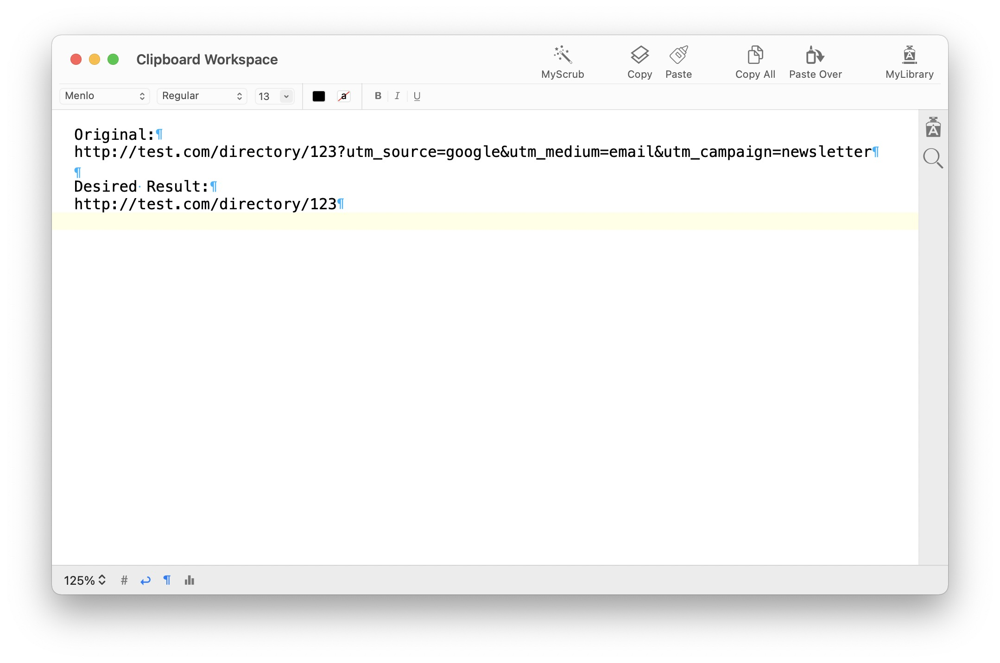
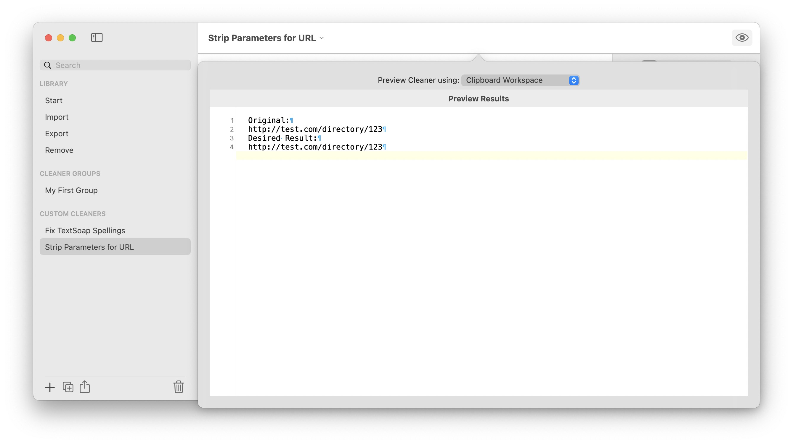
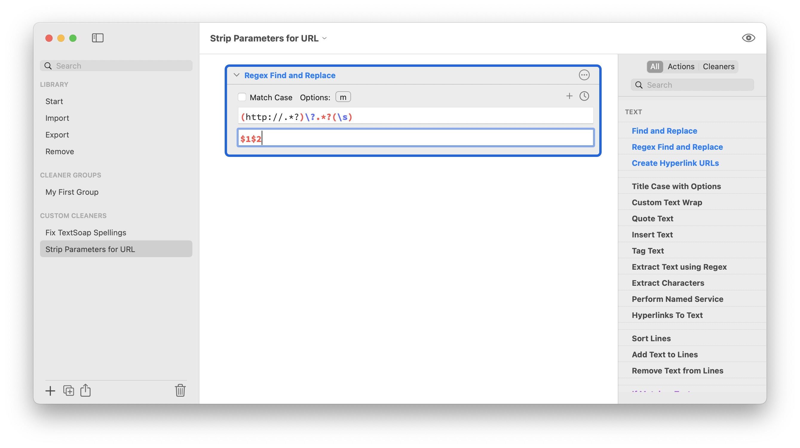
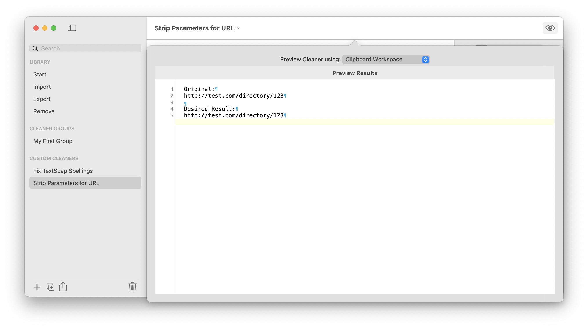

Removing parameters from a URL
Tutorial
We’re going to create a cleaner that takes a given URL and removes the extraneous parameters attached to it, leaving the main URL intact.
Original: http://test.com/directory/123?utm_source=google&utm_medium=email&utm_campaign=newsletter
Desired Result: http://test.com/directory/123
We accomplish this with a custom cleaner, using a Regex Find and Replace action.
Create a new cleaner and give it a useful name.

Add a Regex Find and Replace action.

Now for your regular expression. We’ll break this down in a minute. Regular expressions provide a powerful way to match text based on characteristics of text.

Here is the expression we’re trying to use to match the text.
(http://.*?)\?.*?\s
Let’s break it down:
(http://.*?)
find and capture URL starting with http:// and any characters (non-greedy)
\?
literal ? in expression
.*?
all the text that follows the literal ? . This is also non-greedy so we can match the first whitespace we hit with the next part.
\s
whitespace character. Any tab, space, return that indicates the end of the URL.
–
The (non-greedy) match any character sequence ‘.*?’ allows you to find http:// up through the ‘?’ It acts as a simple wildcard character. Non-greedy means it will find the shortest match possible.
The parentheses allow you to capture part of the matched text. In this case we want to capture everything from the http:// until we get to the ‘?’ (which is the delimiter for parameters in a URL). We can later use that captured string.
When replacing a regular expression match, you can use the some special values to indicate parts of the matched text.
$0 is used to indicate the entire match (for example, if you wanted to augment your text) $1 specifies the first captured group. In our case, it is the base URL.
So we enter in $1 as the replacement for the match.
We can now test the cleaner. We’ll place the previous text into the clipboard workspace (or an text document in TextSoap).

Select the preview button at the top of the custom cleaner editor to test the cleaner.

In our test, we see that we also lost a blank line. That’s because we matched a whitespace character, but didn’t keep it. This would also cause URLs to smash up against any words that followed it.
Let’s fix this. We’ll capture the whitespace (which could be a space, a tab, a return) and make sure it’s included.

We placed parens ( ) around the \s to capture the whitespace that follows the parameters. And then we add that captured group to our replacement string.
And now our test looks correct:
